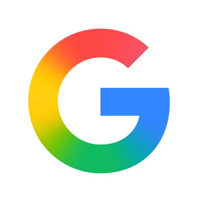

Forward Deployed Engineer, Generative AI
·
Google
| Sept 2026 – Present
Early engineer in Google Cloud's new FDE org, building specific intelligence (agents, evals) for healthcare & life sciences.
More
- Forward deployed on an eight-figure GenAI engagement with one of the largest US health systems, on a two-engineer team
- Co-created DemoForge, a real-time demo builder that spins up a working Gemini Enterprise app or custom React UI from the conversation at any point in a customer call; rolling out internally across the org to customer engineers, starting with the healthcare & life sciences vertical
- Co-authored a computer vision paper with Google researchers (3rd of 6 authors), under review at CVPR 2027
- Built an agent plugin and custom eval for FDE onboarding which was adopted into the org-wide new-hire guide
- Certified as a Google Cloud Professional Cloud Architect (Oct 2026)